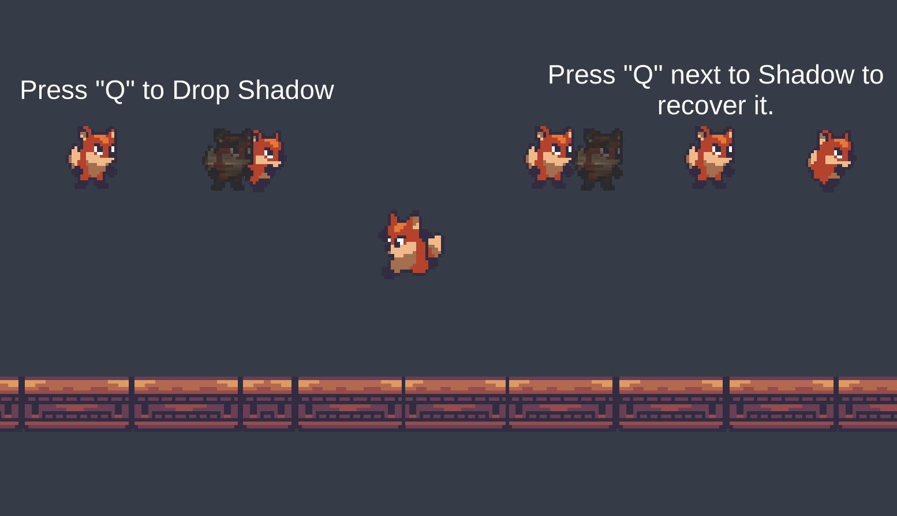
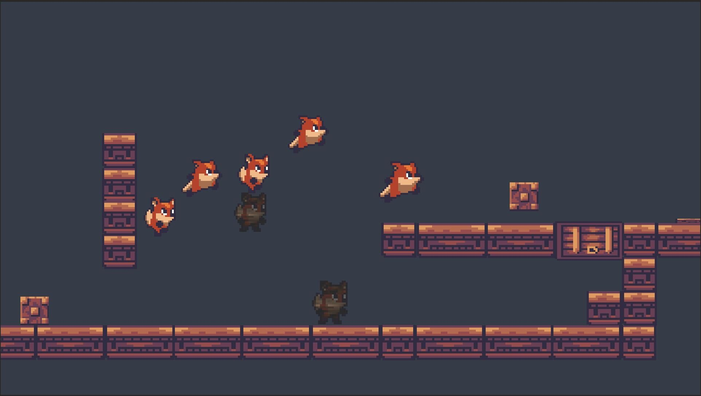

Shadows
A pair work that developed into my playground to experiment and push my boundaries.
Overview

Shadows was a game created based on a given concept of “Leave it behind”. For us, that was taken literally and decided to make the player complete puzzles by leaving their character’s shadow behind. This could be to jump on top of it or to press a secondary button to open a door. The time made us go for basic layouts and puzzles while focusing on functioning simple mechanics. After we had a semi-functional prototype of the game I decided to switch platforms and adapt the game to mobile which was an interesting and exciting challenge.
- Platform
- Windows & Android
- Engine
- Unity2D
- Language
- C#
- Development Time
- 1 Month
- Team Size
- 2
- Role
- System Design, Level Design

Features I designed and built for “Shadows”
Game Design
- Character Movement
- Shadow interactions
- Menu Transitions
- Implementation of art assets (All of the assets belong to ANSIMUZ in the Unity Asset Store)
Scripting
- Shadow interactions
- Map Interactions
- Player Movement